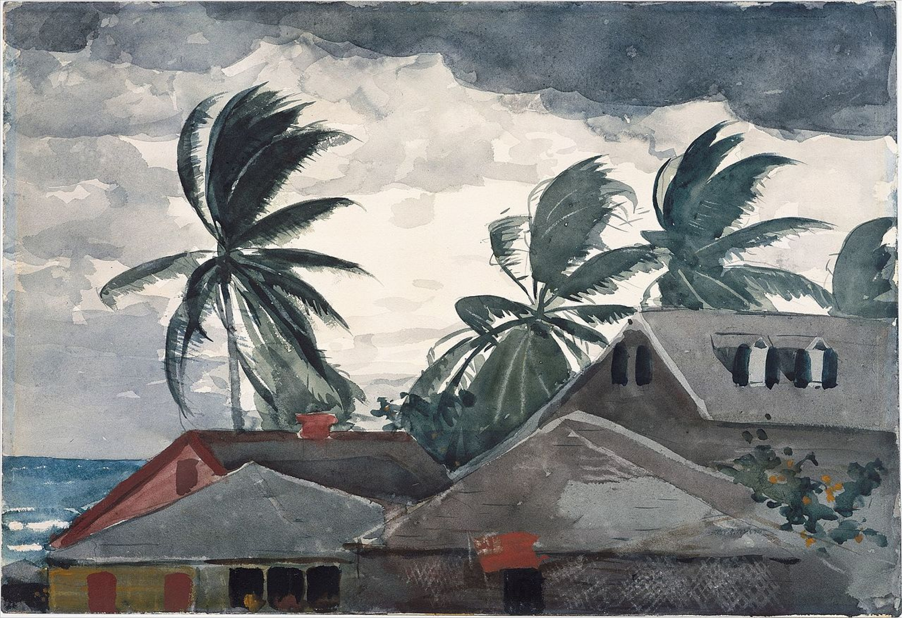
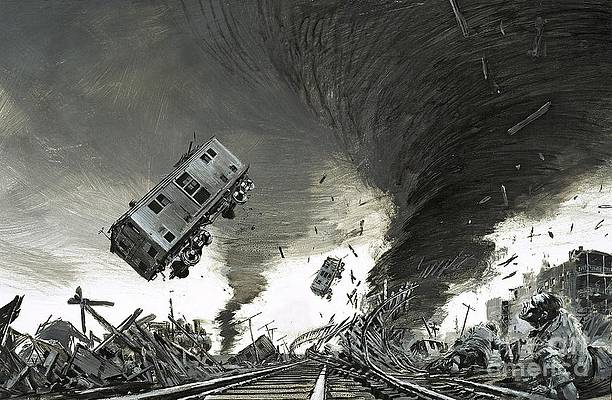
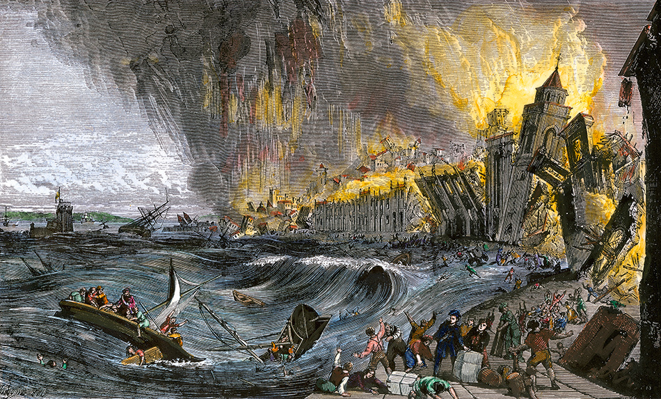

WHAT TO DO?
Before Typhoon
- Always Monitor weather reports and rainfall warning alerts on reliable and accurate websites/sources.
- Ensure to pack those important necessities for you and for your family. (Foods, Clothes, Flashlights, etc.)
- Prepare a list of emergency hotlines in your phone incase of urgent emergencies
- Check your house if needed, ensure that there are no leaks, and the walls are sturdy enough to protect you from the typhoon.
- Evacuate if you think that the location of your house is dangerous (especially when you live near the seashore or mountainsides) since there are high chances of flash floods and landslides.
Images
During Typhoon
- Be mindful, stay at home, and if you really need to evacuate, evacuate immediately and calmly. Incase that the typhoon comes, and you have no time to evacuate make sure to go to a sturdy place that will protect you from the typhoon
- Make sure that all your foods and water containers are sealed. Put them to a safe place that will not be contaminated.
- If you don’t have safe drinkable water, boil water for at least 20 minutes.
- Wear dry and warm clothes to prevent colds
- Stay calm, don’t panic.
- Keep flashlights, candles, and phones in reach.
- Check your house if there are any leaks or unstable parts of it, make sure to avoid that certain area to prevent danger
Images:

After Typhoon
- Leave the evacuation center if the authorities or government officials declares that it’s safe to return home.
- Ensure that your house is safe. If your house is ruined by the typhoon, check it first if it’s safe and is stable before entering.
- Keep monitoring the news for updates and information about the typhoon.


{kind=link}